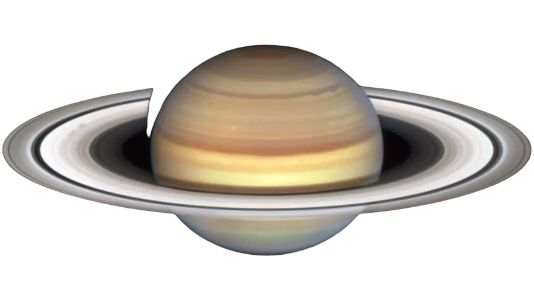

Mercurio
Mercúrio é o menor e mais interno planeta do Sistema Solar, orbitando o Sol a cada 87,969 dias terrestres. A sua órbita tem a maior excentricidade e o seu eixo apresenta a menor inclinação em relação ao plano da órbita dentre todos os planetas do Sistema Solar.

Vênus
Vénus ou Vênus é o segundo planeta do Sistema Solar em ordem de distância a partir do Sol, orbitando-o a cada 224,7 dias. Recebeu seu nome em homenagem à deusa romana do amor e da beleza Vénus, equivalente a Afrodite
Terra
O planeta Terra é o planeta habitado por nós, seres vivos. Conhecido também como planeta água, é o maior dentre os quatro planetas rochosos que fazem parte do Sistema Solar. O Planeta Terra é conhecido como Planeta Azul, por ter 70% da sua superfície coberta de água.
Marte
Marte é o quarto planeta a partir do Sol, o segundo menor do Sistema Solar. Batizado em homenagem a divindade romana da guerra, muitas vezes é descrito como o "Planeta Vermelho", porque o óxido de ferro predominante em sua superfície lhe dá uma aparência avermelhada.
Júpiter
Júpiter é o maior planeta do Sistema Solar, tanto em diâmetro quanto em massa, e é o quinto mais próximo do Sol. Possui menos de um milésimo da massa solar, contudo tem 2,5 vezes a massa de todos os outros planetas em conjunto. É um planeta gasoso, junto com Saturno, Urano e Netuno.

Saturno
Saturno é o sexto planeta a partir do Sol e o segundo maior do Sistema Solar atrás de Júpiter. Pertencente ao grupo dos gigantes gasosos, possui cerca de 95 massas terrestres e orbita a uma distância média de 9,5 unidades astronômicas.

Urano
Urano é o sétimo planeta a partir do Sol, o terceiro maior e o quarto mais massivo dos oito planetas do Sistema Solar. Foi nomeado em homenagem ao deus grego do céu, Urano.
Netuno
Netuno ou Neptuno é o oitavo planeta do Sistema Solar, o último a partir do Sol desde a reclassificação de Plutão para a categoria de planeta anão, em 2006. Pertencente ao grupo dos gigantes gasosos, possui um tamanho ligeiramente menor que o de Urano, mas maior massa, equivalente a 17 massas terrestres.